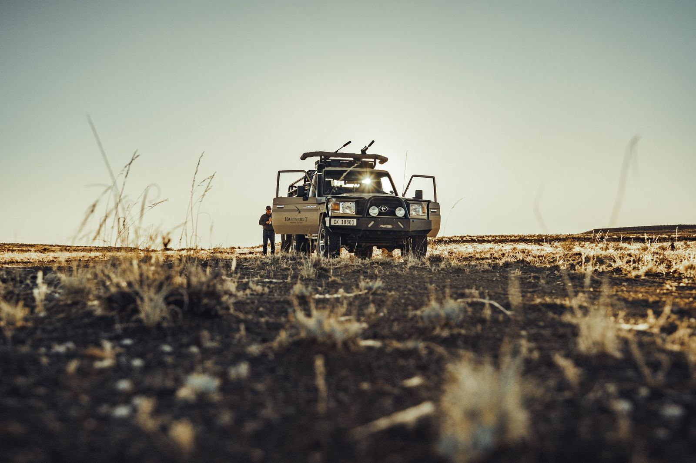
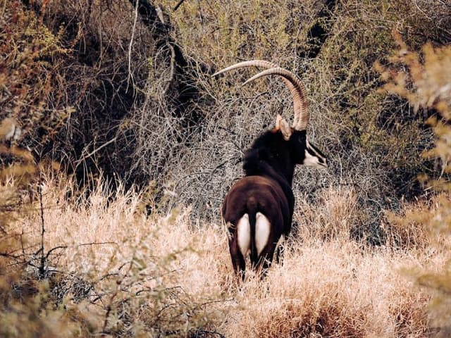

Est. 2015
Plains game hunting · The Karoo
Serious plains game hunting in the Karoo
45,000 acres of hunting ground for dedicated hunters, hunting groups and corporate parties, with our own range, abattoir and lodging on the farm.
Welcome to Hartsrust
A working hunting farm first, with lodging built around the hunt
Hartsrust is a dedicated hunting farm in the South African Karoo, established in 2015 by Arno Steenkamp on a conservation-through-hunting model.
Across 45,000 acres of rivers, bush, open veld and koppies we run guided plains game hunts for hunters who take the craft seriously: long-range hunting, walk & stalk and traditional voorsit jag, with more than 20 species on the farm, from springbok and kudu to sable and roan.
Everything else on the farm supports the hunt. There's a shooting range from 100 m to 1 km, our own abattoir at Die Slaghuis, and two farm houses that sleep hunting parties of up to 31. Whether you're chasing a Springbuck Slam, organising an annual hunting trip or hosting a corporate group, we plan the days around you.
- 45,000 acresof Karoo hunting ground
- 20+ plains game speciesincluding sable and roan
- 100 m to 1 kmon-site shooting range
- Up to 31 guestsacross two farm houses
Explore Hartsrust


Group & corporate hunts
Hunting trips for groups and corporate getaways
Hartsrust is set up for hunting parties, not just individual hunters. Book one or both farm houses for your hunting club, a group of friends or a corporate team, and we'll plan the hunting days, range time and evenings around your group.
- Sleep up to 31: Goodhope (14) and Hartsrust House (17)
- Hunting vehicles, field dressing and lunch included in the day rate
- Catered lunches in the veld, with Karoo breakfast and dinner on request
- A 100 m to 1 km range, with rifle and shotgun hire
- Clay pigeon shooting, game drives and mountain biking for non-hunters
- Game processed on site at Die Slaghuis, ready to take home

How we hunt
Hunting styles for seasoned marksmen and new hunters
Hunt Hartsrust's varied terrain the way you prefer, or mix styles over a multi-day trip. Tell us what you're after and we'll plan the hunt with you.
- Long-range huntingOpen veld and koppies for long, precise shots.
- Walk & stalkTrack plains game on foot through bush and along the rivers.
- Voorsit jagThe traditional South African sit-and-wait hunt.
- Shooting rangeSight in from 100 m out to 1 km before you head out.

Species & slams
Plains game on 45,000 acres
Rivers, bush, open veld and koppies support a wide range of plains game. Take on the Springbuck Slam in all four colour variants or the Wildebeest Slam in all three, or target premium species like sable and roan.
- Springbok
- Kudu
- Gemsbok
- Blue, black & golden wildebeest
- Sable & roan
- Lechwe & waterbuck
- Blesbok & red hartebeest
- Burchell's & Hartmann's zebra
Plan your hunt
Book your Karoo hunt or group trip
Tell us your dates, the size of your group and what you'd like to hunt, and Arno will come back to you with availability and a full costing.